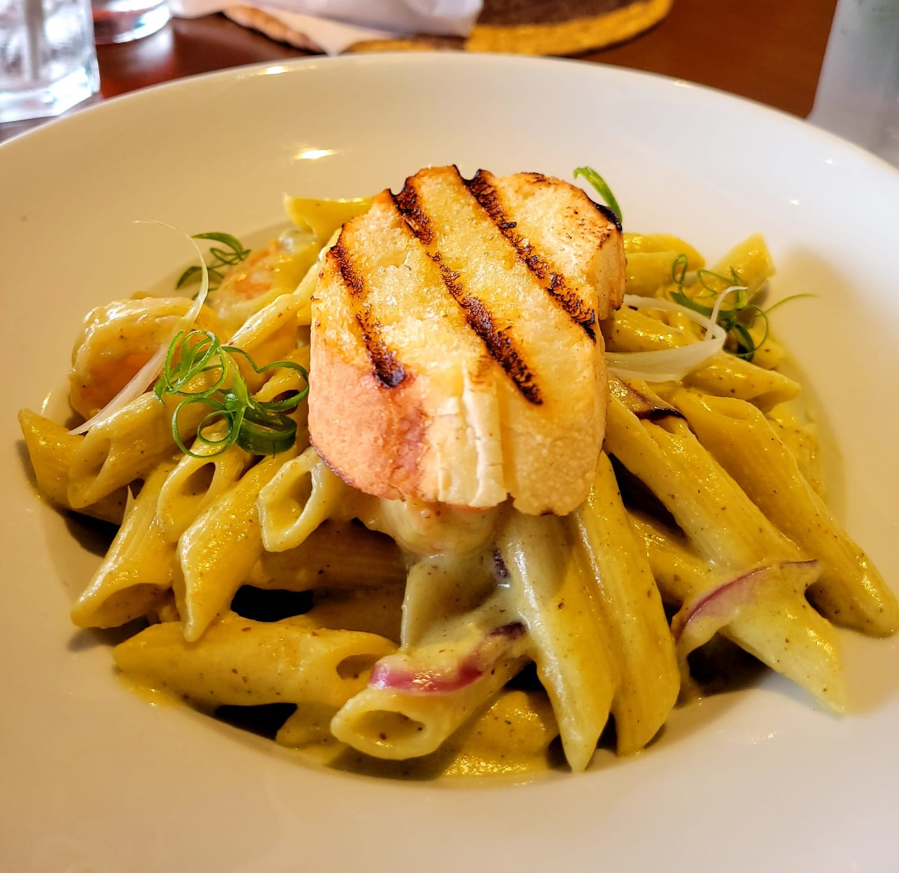

My Favourite Alfredo Recipe
September 29, 20222 by Kimberly Laughton Shrimp and chicken alfredo has had a very special place in my heart since my parents first prepared it at home. But why keep it to myself? Here is my favourite pasta recipe :). Ingredients: Deboned Chicken Thighs, Shrimp, Pasta (any type), Chicken Broth, 6 Garlic cloves, Italian seasoning, escallion, 1 Large Onion, 6 Tomatoes, Pesto sauce, Alfredo Sauce, Black Pepper, Salt, Solomon Gundy, Paprika, Butter, All purpose seasoning and olive oil and red pepper flakes.
Directions:
1. Peel tomatoes (optional) and dice into small cubes. Dice onion, escallion and 2 cloves of garlic.
2. Rinse chicken thighs in water with a small amount of vinegar. Cut chicken into
bite sized pieces.
3. Pre-heat a skillet with a moderate amount of olive oil. Add onions first, then escallion and
garlic. Cook until garlic is fragrant and onions are carmelized. (Optional) While cooking add black Pepper
and your preffered spices and seasoning.
4. Pour chicken broth into a small pot, add diced tomatoes, cooked seasonong from step 3 and spices and seasonings
of your choice. Let this simmer on low heat for 30 - 35 minutes.
5. Fill up a medium sized pot with water and bring it to a boil and add 1 tsp of salt to add pasta later. Heat skillet with
olive oil to add chicken later. Note - Do not fully cook the pasta.
6. Season chicken with 2 cloves of garlic diced or minced, italian seasoning, all purpose seasoning, 1 tbps olive oil,
paprika, 1 tsp salt, black pepper and red pepper flakes.Rub seasoning into meat.
7. Add chicken to heated pan and cook on medium heat until water has evaporated and chicken is golden brown.
8. Season shrimp with seasonings mentioned in prevous step, but add 1/4 tsp of salt instead.
9. Heat skillet with butter and add shrimp. Cook for maximum 4 minutes or until pink.
10. Combine your elements in one pot. Add the broth first and stir the alfredo sauce into it. Add 2 tbsp of pesto sauce.
Bring the sauce to a simmer on low heat. Add the chicken, shrimp and pasta last. Cover the pot and let it sit on a really
low flame for 5 mimutes. YOUR ALFREDO IS READY!
This alfredo is great with a side of warm garlic bread and chilled moscato. Enjoy!